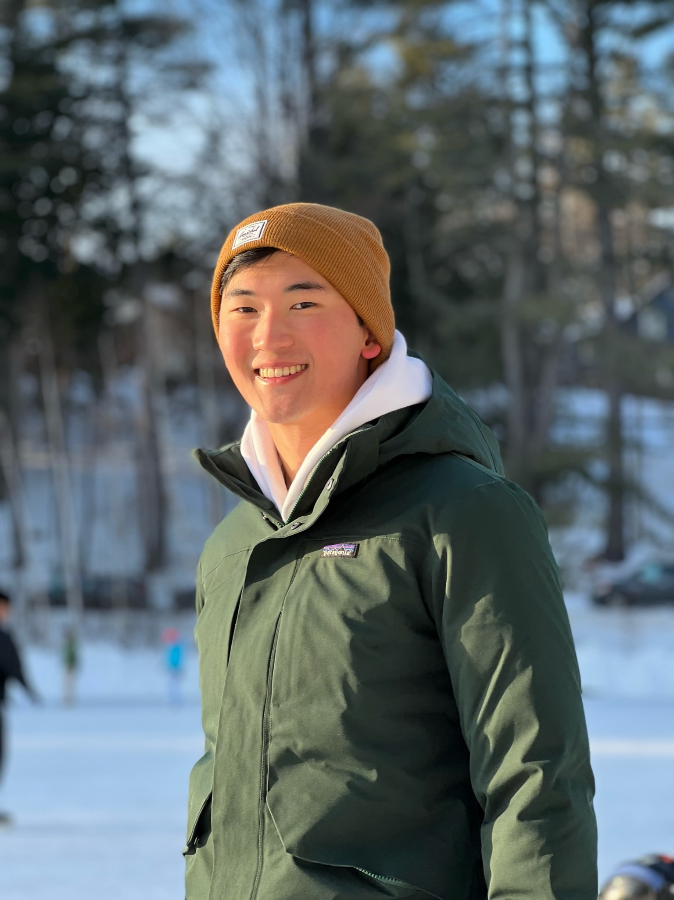
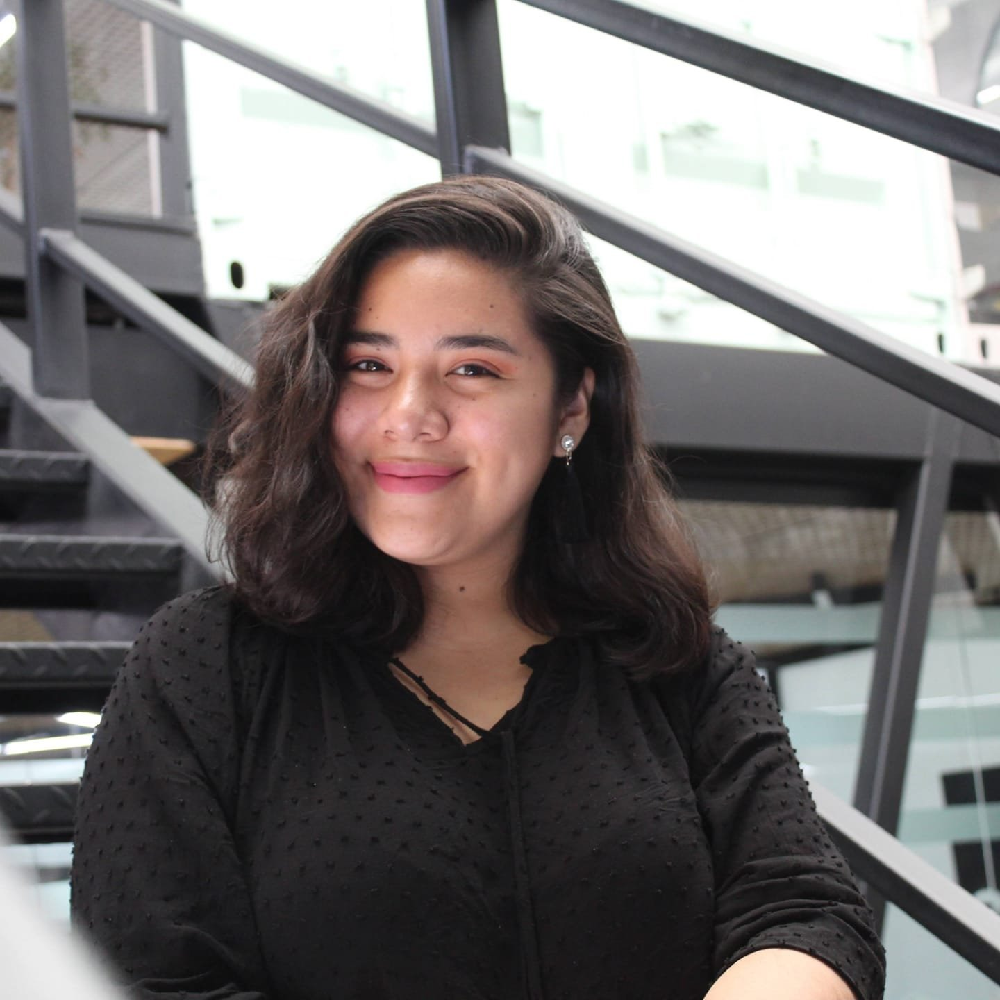

We helped bring back late night. Now we want Collis Weekends and more money per dining Swipe
Mental Health
We are commited to finding other apps and platforms other than UWill that will provide teletherapy.
Support Student Activism
We promise to support Student Activism from the ground up by hosting more town halls and being more direct towards the administration
Meet Matthew

Matthew Kim is a '25 from Austin, Texas studying Computer Science and Chinese and is excited to serve students in DSG. At Dartmouth, he is Co-Chair of Bait and Bullet, plays in the Dartmouth Symphony Orchestra, and is Co-Treasurer of the Korean Students Association. In his free time, he loves to go fishing and take care of his dorm plants!
Meet Ale

Alejandra Carrasco is a Dartmouth Student from Lima, Peru. She is a Sociology mod. Latin American and Caribbean Studies and Education major. Alejandra is involved with Magnuson Student Leadership Board, DartUP (Social Entrepreneurship club), Chess Club, Global Issues Scholars, Team director of Dartmouth Women Investment Fund, Vice president of The Women's Network at Dartmouth and Senator at the Student Assembly at Dartmouth. She is also part of the FYSEP community and King Scholars. Before joining Dartmouth, she was former CEO-now Ambassador and CO-Founder of Wawa Laptop, the first eco-friendly laptop made in Peru. Also, she Co-found the NGO AEPEX (Peruvian student's abroad association) to democratize the information for low-income students about the application process to colleges' in the US.
What we've done
Late Night Dining
Matthew organized the first late night dining in Foco where he ordered 300 pizzas and gained permission to serve them in Dark Side! Following this event, Dartmouth Dining agreed to reopen late night.
Free Laundry
Matthew began the free laundry project in Fall 2022 and helped lead the first few meetings with Residential Operations.
(Ale will Insert)
(Ale will Insert)
(Ale will Insert)
(Ale will Insert)
Upcoming Events
Meet and Greet
Meet Matthew and Ale at the Collis Patio
April 14th from 12-2pm
Happy Hour
Join Matthew and Ale on the green for some refreshing food and drinks!
April 15th from 4-6pm
Pizza at Rocky
Matthew and Ale will serve free pizza!
April 16th from 9-10pm
Study Break
Matthew and Ale will be at the library with snacks and drinks!
April 17th from 8-10pm
Read Our Platform
Our Platform
Read our platform to learn more about what we will do for Dartmouth!